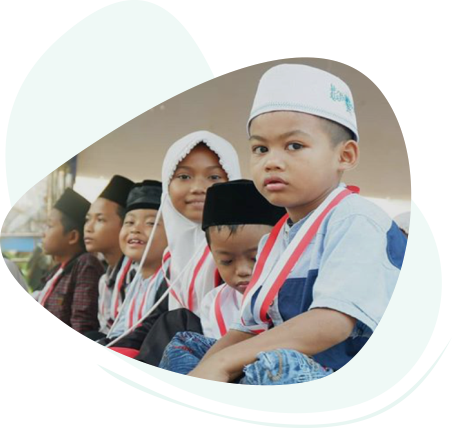
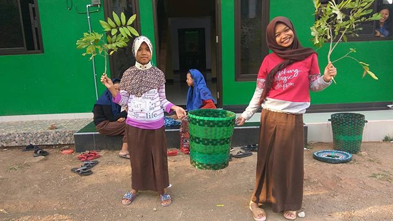
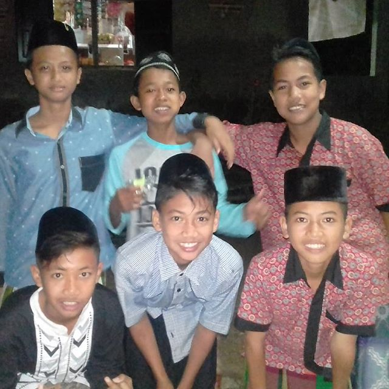
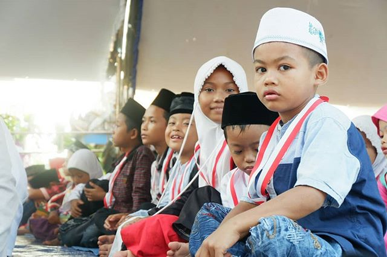
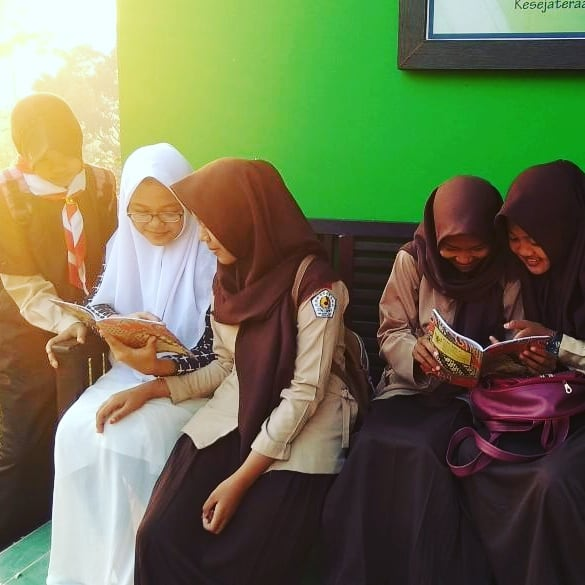
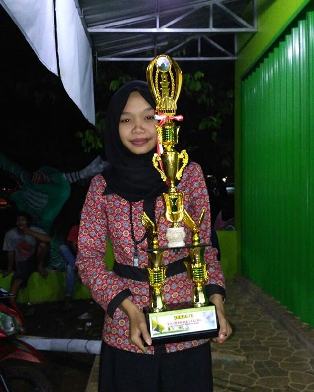
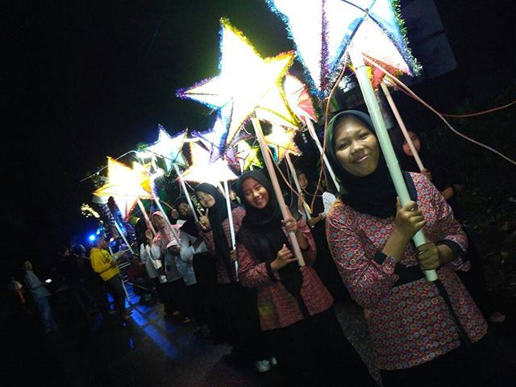
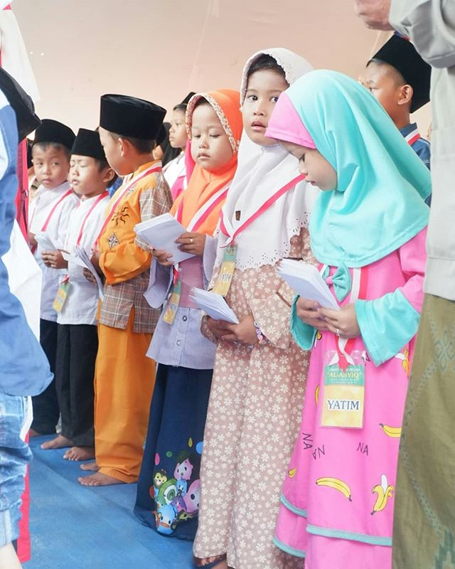

Tentang Kami
Yayasan Yatim Piatu dan Anak Dhuafa Al Muzakki
Yayasan Yatim Piatu dan Anak Dhuafa Al Muzakki adalah sebuah lembaga sosial di Jepara yang mengasuh anak anak yatim, piatu serta fakir miskin dan dhuafa. Semangat utama dari Yayasan Yatim Piatu dan Anak Dhuafa Al Muzakki adalah untuk meringankan beban serta memberikan santunan sehingga anak anak yatim piatu dan fakir miskin serta dhuafa bisa lebih baik.

Program Kami
AL MUZAKKI DONATION PROGRAM
Pengurus dan Kepala bidang beserta anggota Yayasan Yatim Piatu dan Anak Dhuafa Al Muzakki memiliki beberapa target program baru yang telah disetujui oleh Dewan Pembina
Program Pendidikan
Program pembiayaan sekolah untuk anak-anak yatim piatu untuk menuntut ilmu di sekolah dasar (negeri/swasta), Sekolah menengah atas (SMP) dan Sekolah menengah umum (SMU sederajat).
Program Pembangunan
Renovasi Musholla Almuzakki, Musholla ini nantinya akan berkapsitas 200 orang, serta digunakan sebagai Kajian Lepas Kerja, kajian muslimah, program santri mukim, kegiatan sosial, pembinaan yatim.
Program Orang Tua Asuh
Program pembiayaan kuliah untuk anak-anak yatim piatu yang telah lulus SMU atau sederajat dan telah dinyatakan lulus dari uji loyalitas, moral, budi pekerti dan mengikuti Hafalan al Qur’an selama satu tahun.
Program Kajian dan Dakwah
Pengajian rutin setiap malam mulai habis sholat jamaah magrib sampai sholat jamaah isya’, dan Menyelenggarakan pengajaran bacaan baca tulis Al Qur’an untuk anak-anak, remaja dan dewasa.
Dengan Bantuanmu
Mereka Bisa Tersenyum dan Memiliki Masa Depan Yang Cerah









Jl. Raya Benteng Portugis RT 08 RW 05 Desa Banyumanis, Donorojo,Jepara, Jawa Tengah 59454
Lihat Peta